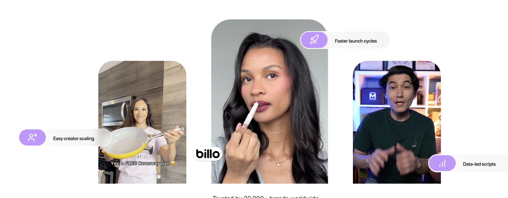

UGCDrop vs Billo (2026): Instant Library or Custom Campaign?
Updated June 22, 2026·8 min read
TL;DR
Both platforms use real human creators, the difference is how and when you get the content.
UGCDrop is a pre-shot clip library: browse 10,000+ clips and download instantly for $28/month.
Billo is a custom campaign marketplace: post a brief, wait for creator selection, then wait for production, pricing hidden behind a demo call.
Choose UGCDrop to scale ad testing fast. Choose Billo for fully custom, brand-specific campaigns if budget and timeline aren't constraints.
Both UGCDrop and Billo connect brands with real human creators. But the workflows, pricing models, and use cases are completely different. One lets you download exactly what you need in minutes. The other puts you in a queue behind hundreds of competing brands. This guide breaks down which model actually fits your ad operation, and which one will leave you waiting while your competitor tests 20 hooks this week.
What is the main difference between UGCDrop and Billo?
UGCDrop operates as a self-serve content library. Creators pre-shoot raw clips, reactions, hooks, demos, b-roll, upload them to the platform, and brands download whatever fits their campaign instantly. No briefing, no waiting, no per-video negotiation.
Billo operates as a custom production marketplace. Brands write a brief, post it to the platform, and 5,000+ creators compete for the job. After selection (24–72 hours), the chosen creator shoots and delivers the video (another 1–3 days). The brand pays, Billo takes a cut, and the creator keeps the rest.
Billo: Write brief → post → wait for applications → select creator → wait for production → receive video.
4–5 days
minimum end-to-end turnaround on Billo (creator selection + production). UGCDrop delivers the same clip in under 60 seconds.
Based on Billo platform workflow data, 2026
⚠
Pricing Transparency
Billo does not publish any pricing for brands. You must book a demo call to receive a quote. UGCDrop lists all plans publicly, no sales call required to understand what you'll pay.
UGCDrop's searchable library, filter by emotion, gender, age, and setting. Download the exact clip you need in under 60 seconds.
Why does the production model matter so much for paid ads?
1. Speed to test: Library vs. Campaign queue
Media buyers running paid social need to test hooks constantly. Creative fatigue on Meta and TikTok happens fast, winning hooks burn out in days, not months. UGCDrop lets a single media buyer download 20 different reaction clips in an afternoon and push them all to an ad set by evening. Billo requires a separate brief for every video, a separate creator selection, and a separate production wait. At Billo's pace, you'd still be waiting on brief #3 while your competitor has already killed their losers and scaled their winners.
2. Cost structure: Subscription vs. Unknown custom rates
UGCDrop charges $28/month for 30 downloads, $49/month for 100 downloads, or $199/month for unlimited. If you need a one-off clip, credits start at $1.69. You know the number before you sign up. Billo does not publish brand-side pricing, reported creator payouts alone run $60–$120 per video after Billo's undisclosed platform cut, which means brand-side costs are meaningfully higher. For volume testing, the math compounds quickly against Billo.
3. Creative control: Choose what you want vs. Brief what you hope for
UGCDrop's library is filterable by emotion, gender, age, setting, clothing, and facial expression. You find the clip that matches your hook angle and download it. With Billo, you describe what you want in a brief and hope the selected creator interprets it correctly. Revision rounds are common. UGCDrop eliminates interpretation entirely, you see the clip before you pay for it.
✓
UGCDrop Contributor Program
Like Billo, UGCDrop also lets real creators earn by uploading clips to the library, meaning the content comes from vetted human creators, not AI. The difference is the clips are pre-shot and available instantly, rather than made-to-order per brief.
Specification Comparison
Feature
UGCDrop
Billo
Content model
Pre-shot library (instant download)
Custom campaign marketplace (made-to-order)
Creator source
Real human creators (UGC Contributor Program)
Real human creators (5,000+ vetted)
Time to first clip
Under 60 seconds
4–5 days minimum (selection + production)
Pricing model
From $28/mo, published publicly
Custom, requires demo call
Volume capability
30–unlimited downloads/month
One brief, one creator, one video at a time
Creative browsing
Filter by emotion, gender, age, setting
Not available, you describe, they interpret
B-roll library
100,000+ B-roll clips included
Not offered
Hook library
Viral scroll-stopping hook database included
Not offered
Built-in editor
Browser timeline studio included
Not offered
Best for
Paid ad testing, hook iteration, media buyers
Brand-specific campaigns, managed production
How does pricing compare between UGCDrop and Billo?
UGCDrop
Pro Plan$28/mo
30 downloads, 3 studio credits, full hook library, 100k+ B-roll access.
Unlimited Plan$49/mo
100 downloads, 30 studio credits, unlimited B-roll, custom videos at $1 each.
Enterprise Plan$199/mo
Unlimited downloads, 100 studio credits, priority support, custom creator requests.
Pay-as-you-gofrom $1.69/credit
No subscription needed. Volume discounts scale down to $0.40/credit.
Billo
Brand pricingNot published
Must book a demo call to receive a custom quote. No self-serve option available.
Per-video costHigher than disclosed
Creators report earning $60–$120 per video after Billo's cut, meaning brand-side costs run higher.
Volume pricingCustom only
Agency and enterprise packages available via sales, no published tier structure.

Billo's marketplace UI, real creators, but each video is made-to-order per brand brief. One queue, one creator, one campaign at a time.
"UGCDrop has some seriously high quality human reactions. All their videos are spot on in terms of what's trending right now, especially all the different type of reactions and videos. Highly recommend if you're looking to source human UGC without breaking the bank."
Gaurav, CEO of FastLane
Which platform should you choose?
Choose UGCDrop if…
You run paid ads and need to test multiple hooks this week, not next week
You want transparent pricing without a sales call
You need volume, 30 to unlimited clips per month at a predictable cost
You want to browse and choose clips before committing, not brief and hope
You want a built-in editor, B-roll library, and hook database in one tool
What is the main difference between UGCDrop and Billo?
UGCDrop is an instant self-serve library where you browse and download pre-shot UGC clips immediately. Billo is a custom campaign marketplace where brands post briefs, creators apply and compete, and you wait days for production to complete.
Does Billo publish its pricing for brands?
No. Billo does not list public pricing. Brands must book a demo call to receive a custom quote. UGCDrop publishes all plans transparently, starting at $28/month with no sales call required.
How long does it take to get video content from Billo vs UGCDrop?
Billo requires 24–72 hours for creator selection, plus 1–3 days for content production. UGCDrop clips are available for instant download the moment you sign up. For paid ad testing at speed, there is no comparison.
Can I test multiple ad hooks quickly using Billo?
Not efficiently. Each Billo brief targets one creator producing one video. UGCDrop lets you download dozens of different hook variations in minutes, enabling rapid split testing across ad sets on the same day.
Do both UGCDrop and Billo use real human creators?
Yes. Both platforms involve real human creators. The difference is the model: Billo connects brands with creators for made-to-order custom campaigns. UGCDrop hosts a searchable library of pre-shot clips from its creator contributor program, available for instant download on demand.
Why wait 5 days when you can download in 60 seconds?
UGCDrop gives you instant access to 10,000+ real human creator clips, a built-in studio, and transparent pricing from $28/month. No demo call. No brief queue.